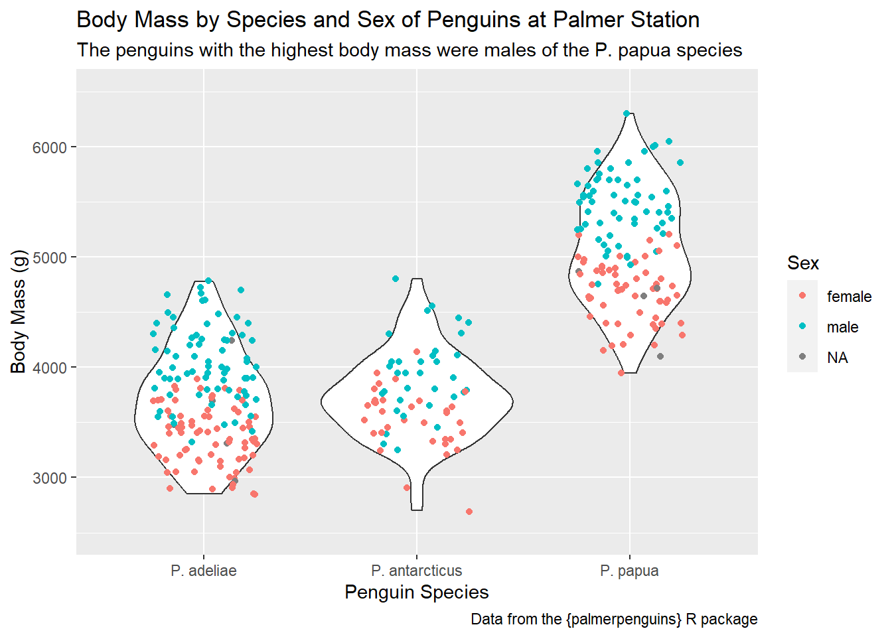
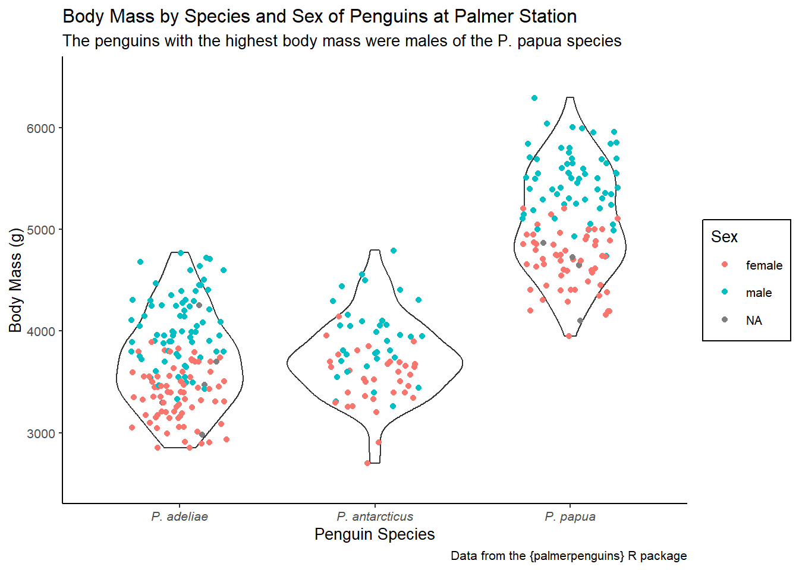

We continue after lunch by revisiting data visualization. We learn about customizing and enhancing our graphics for communication through the use of scales, labels, and themes. We also learn about advanced plot layouts using faceting and the patchwork package. Finally, we discuss exporting graphics from R to image files and other formats.
Use the penguins dataset from the {palmerpenguins} package to create a plot that maps species to the x-axis and body_mass_g to the y-axis. Add a violin geom and a jitter geom (with 0.25 width). For the jitter geom only, map sex to color.
Configure the y axis to range from 2500 to 6500.
Configure the x-axis to use the scientific names of each species (see table below)
Bonus: Suppress all messages and warnings from this chunk.
Modify your final plot from Question 1 in the following ways:
Give the x-axis, y-axis, and the color scale better labels (with Title Case)
Give the plot a descriptive title about what the graphic is about (generally) and a subtitle that describes which sex-species combination had the highest body mass.
Add a caption stating the source of this data (e.g., the package name)
Click here for the answer key
ggplot(penguins, aes(x = species, y = body_mass_g)) +geom_violin() +geom_jitter(width =0.25, aes(color = sex)) +scale_y_continuous(limits =c(2500, 6500)) +scale_x_discrete(labels =c("Adelie"="P. adeliae","Chinstrap"="P. antarcticus","Gentoo"="P. papua" ) ) +labs(x ="Penguin Species",y ="Body Mass (g)",color ="Sex",title ="Body Mass by Species and Sex of Penguins at Palmer Station",subtitle ="The penguins with the highest body mass were males of the P. papua species",caption ="Data from the {palmerpenguins} R package" )

Practice 3
Modify your final plot from Question 2 in the following ways:
Apply the “classic” complete theme using theme_classic() and change the base font size to 10.
Adjust the legend.background element to be rectangle with color = "black".
Adjust the axis.text.x element to be text with face = "italic".
Click here for the answer key
ggplot(penguins, aes(x = species, y = body_mass_g)) +geom_violin() +geom_jitter(width =0.25, aes(color = sex)) +scale_y_continuous(limits =c(2500, 6500)) +scale_x_discrete(labels =c("Adelie"="P. adeliae","Chinstrap"="P. antarcticus","Gentoo"="P. papua" ) ) +labs(x ="Penguin Species",y ="Body Mass (g)",color ="Sex",title ="Body Mass by Species and Sex of Penguins at Palmer Station",subtitle ="The penguins with the highest body mass were males of the P. papua species",caption ="Data from the {palmerpenguins} R package" ) +theme_classic(base_size =10) +theme(axis.text.x =element_text(face ="italic"),legend.background =element_rect(color ="black") )

Practice 4
Create a ggplot from mpg that maps displ to x and hwy to y and includes a point geom. Facet the plot such that there are seven columns showing class levels and three rows showing drv levels.
Click here for the answer key
library(tidyverse)ggplot(mpg, aes(x = displ, y = hwy)) +geom_point() +facet_grid(drv~class)
Practice 5
Recreate this figure from mpg using {ggplot2} and {patchwork}. Hint: The geoms (left-to-right) are density, bar, density, boxplot, boxplot.
Bonus: Make the top row half the height of the bottom row and add tags “a” to “e”.
Create a document in PowerPoint (or equivalent program, e.g., Google Slides) and draw a box where you would put a figure. Examine that box’s size and save a ggplot in that same size. Insert your image into PowerPoint.
Bonus: Adjust the font size of your plot to be more readable in PowerPoint.
# Simple example plotggplot(mpg, aes(x = displ, y = hwy)) +geom_point()
Click here for the answer key
p <-ggplot(mpg, aes(x = displ, y = hwy)) +geom_point()ggsave("act3a.png", plot = p, width =5, height =3, units ="in")
Bonus
p <-ggplot(mpg, aes(x = displ, y = hwy)) +geom_point() +theme_grey(base_size =18)ggsave("act3b.png", plot = p, width =5, height =3, units ="in")